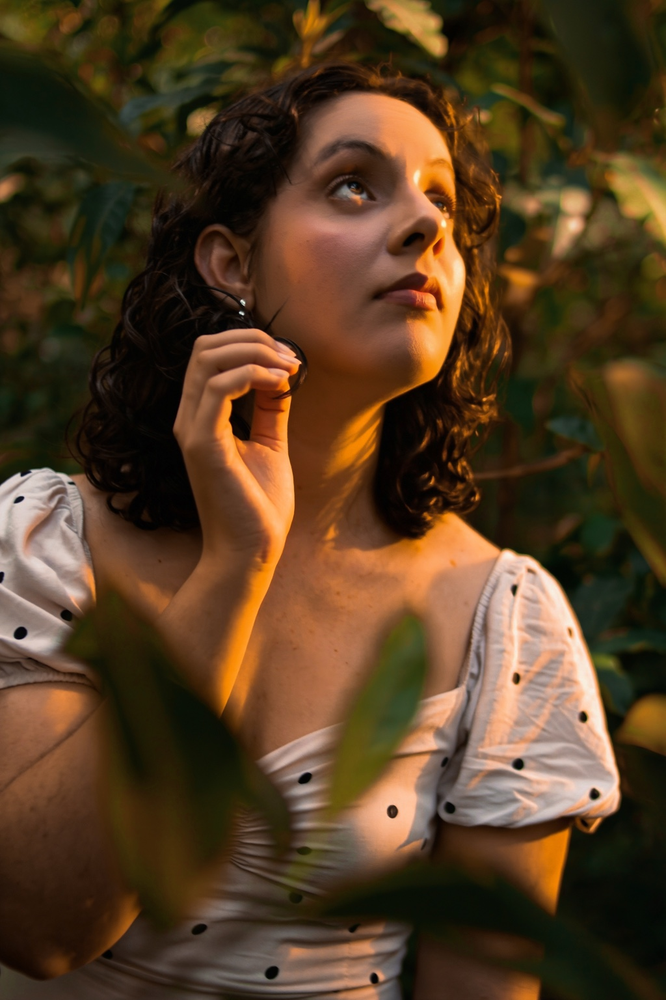
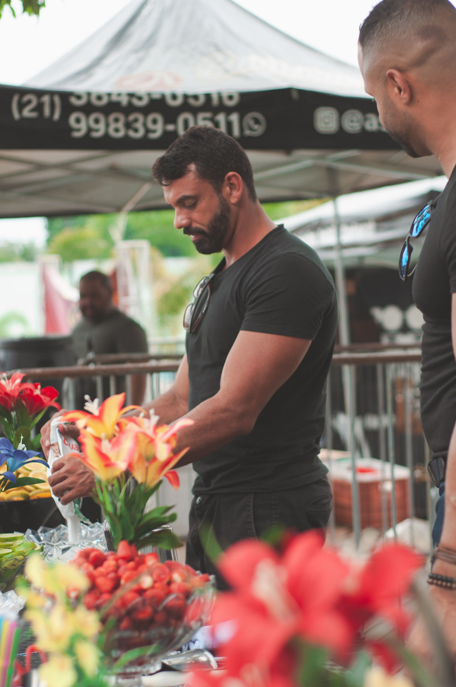
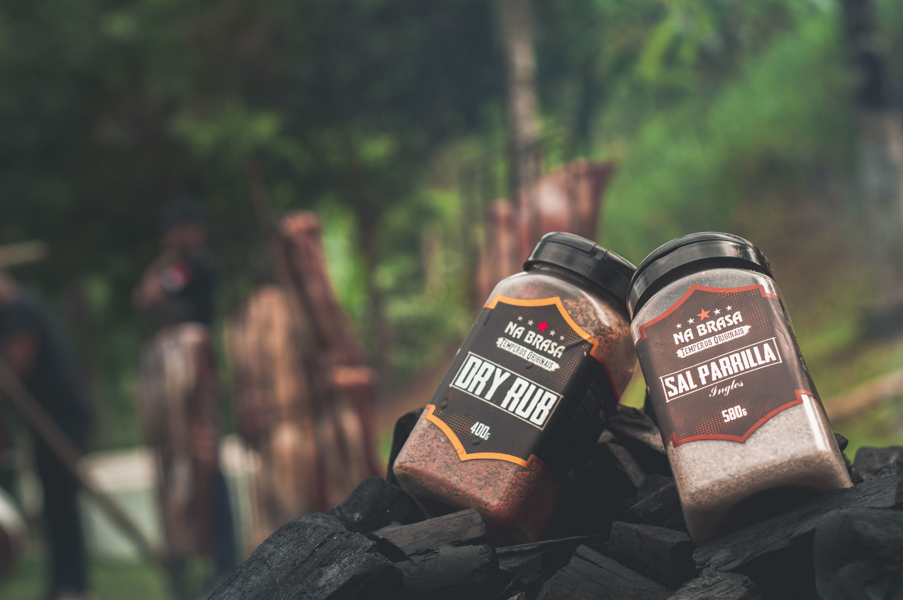
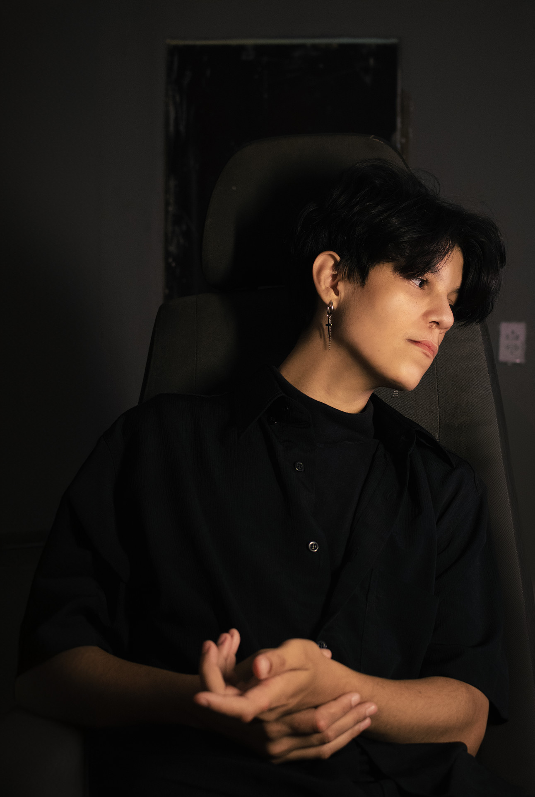

FILME 01 / ATHAMANTIS
Assistir no VimeoUM OLHAR.
INFINITAS POSSIBILIDADES.
UM UNIVERSO EM CADA OLHAR 


IMAGENS QUE CARREGAM INTENÇÃO.EXPLORE O MEU UNIVERSO
02 — POR QUE ATHAMANTIS?
COMEÇAR
PEQUENO.
CRIAR ALGO
QUE FICA.
A referência veio do espaço.
O significado veio de dentro.
Athamantis nasceu da ideia de que o tamanho do começo não determina o impacto de uma trajetória. Algo distante pode passar despercebido. Até ganhar movimento, presença e encontrar o seu lugar.
É assim que vejo a criação: observar o que parece comum e revelar o que merece ser visto.
Kaio Mendes FOTÓGRAFO / CRIADOR DA ATHAMANTIS
UM UNIVERSO FEITO DE DETALHES.
SOL & LUAÓRBITAUM MESMO A

PRAZER, KAIO.ANTES DA FOTO,
ANTES DA FOTO,
A CONEXÃO.
Sou Kaio Mendes, fotógrafo e criador da Athamantis, em Itaboraí. Meu trabalho passa por pessoas, eventos, gastronomia e pelas imagens que dão presença a um negócio.
Para mim, fotografar também é fazer alguém se sentir bem consigo. Você não precisa chegar sabendo posar: vamos conversar, encontrar seu ritmo e construir as imagens com tranquilidade.
Gosto de descobrir algo interessante nos lugares comuns. A luz, um gesto e os detalhes ajudam a contar o que as palavras nem sempre alcançam.
Conheça meu perfil pessoal01 — UNIVERSO ATHAMANTIS
Fotografia. Movimento. Identidade. Digital.
Uma ideia pode ocupar muitos espaços.
UM ESTÚDIO.
MUITAS FORMAS DE CRIAR.
Um universo de possibilidades, quatro maneiras de contar a sua história. Explore nossas áreas e os projetos que dão forma a cada uma.
ATHAMANTIS / FOTOGRAFIA
01 / 04RETRATOS DE UM OLHAR.
Uma seleção de imagens. O restante fica nas galerias completas.
ATHAMANTIS / AUDIOVISUAL
02 / 04O INSTANTE GANHA MOVIMENTO.
Filmes e vídeos do portfólio original da Athamantis.
ATHAMANTIS / DESIGN
03 / 04IDENTIDADE EM CADA DETALHE.
Direção visual, peças gráficas e marcas. Os exemplos abaixo são conceituais.

ESTUDO CONCEITUAL
Forma / Identidade visual
Sistema visual, marca e aplicações editoriais. Projeto ilustrativo de demonstração.

ESTUDO CONCEITUAL
Matéria / Direção de arte
Exploração de tipografia, composição e elementos gráficos. Projeto ilustrativo.
ATHAMANTIS / WEBSITES
04 / 04PRESENÇA ALÉM DA TELA.
Interfaces, landing pages e portfólios. Exemplos conceituais nesta prévia.

ESTUDO CONCEITUAL
Studio / Landing page
Layout de página de apresentação com foco em leitura e conversão. Projeto ilustrativo.

ESTUDO CONCEITUAL
Olhar / Portfólio digital
Experiência editorial para mostrar trabalhos em desktop e celular. Projeto ilustrativo.
Uma ideia pode começar em uma foto e ganhar vida em muitas linguagens.
MONTE SEU PROJETO ↗SEU PRÓXIMO PROJETO
COMEÇA AQUI.
Fotografia, vídeo, design ou presença digital. Escolha o que faz sentido e monte sua primeira estimativa.
MONTE SEU PROJETO O valor exibido é uma estimativa. A proposta final é personalizada.03 — O QUE PODEMOS CRIAR
Da primeira ideia
à imagem que fica.
CADA HISTÓRIA,
UM NOVO ENQUADRAMENTO.
Escolha um ponto de partida. Para outras quantidades, uma diária ou um projeto maior, montamos um orçamento personalizado.
ALÉM DA FOTOGRAFIASua ideia também
Sua ideia também
pode ganhar movimento.
Produção audiovisual com escopo e orçamento definidos para o seu projeto.
Explorar trabalhos em vídeo Conversar sobre um vídeo05 — VAMOS CRIARITABORAÍ & REGIÃO / RJ
O QUE VOCÊ
QUER MOSTRAR?
Uma pessoa. Um momento. Seu negócio.
Me conta a ideia. Vamos pensar juntos nas imagens.
Atendimento em Itaboraí, São Gonçalo, Niterói, Maricá, Tanguá, Rio Bonito e Magé. Local, disponibilidade e deslocamento combinados no orçamento.